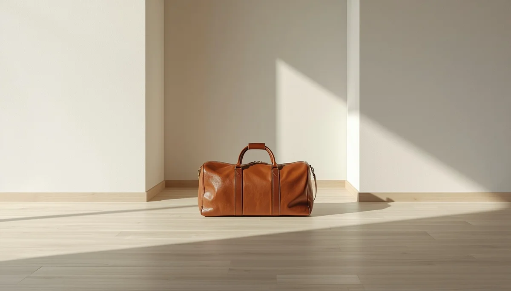

Deporte, actividad física y autoestima
Una de las dudas más frecuentes ante el diagnóstico de escoliosis es si el menor debe abandonar la práctica deportiva. Salvo indicaciones médicas muy específicas, la regla general apunta a fomentar la actividad física regular, ya que el movimiento ayuda a mantener la musculatura tonificada y favorece el bienestar general.
Promover el ejercicio sin restricciones infundadas
Practicar deportes, correr, nadar o participar en juegos escolares beneficia tanto la salud física como la autoestima del niño o adolescente. Fomentar una vida activa evita el aislamiento y refuerza la confianza en las capacidades de su propio cuerpo.
Cuidar la dimensión emocional y social
Garantizar que el menor mantenga sus aficiones y su círculo de relaciones sociales sin estigmas protege su equilibrio emocional durante los años de formación escolar.
"La actividad física y el deporte son motores esenciales de salud y autoestima, incluso cuando convivimos con la escoliosis."
Integrar la vitalidad en el día a día
Estimular el ejercicio lúdico y la participación social asegura un crecimiento equilibrado, libre de limitaciones innecesarias.
➔ Volver al índice de Escoliosis Idiopática